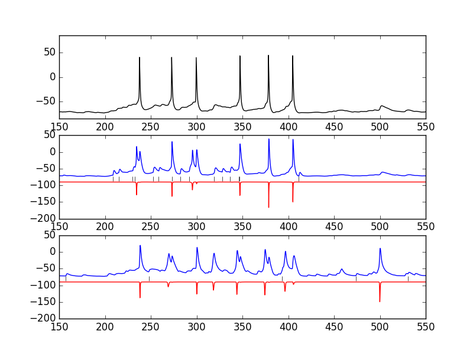

The NEURON and Brian code for the paper:
Smith SL, Smith IT, Branco T, Hausser M (2013) Dendritic spikes enhance stimulus selectivity in cortical neurons in vivo. Nature 503:115-20
doi: http://dx.doi.org/10.1038/nature12600
is available at the link:
https://github.com/OpenSourceBrain/SmithEtAl2013-L23DendriticSpikes
Example Use:
After downloading the model with a command like:
git clone https://github.com/OpenSourceBrain/SmithEtAl2013-L23DendriticSpikes
You can cd to the NEURON/mod.files folder and compile the mod files with
a command like (linux):
nrnivmodl
(If you need more help for a different platform please consult this page:)
https://senselab.med.yale.edu/ModelDB/NEURON_DwnldGuide.cshtml
Then in the libcell.py file change the line:
#load_mechanisms('/directory_where_mod_files_have_been_compiled')
to
load_mechanisms('./mod.files')
And then run simulations with the command:
python main.py
Finally the command
python -i analyse.py
Will produce images:

similar to the soma and dendritic voltage traces seen
in the papers supplementary movies:
https://www.nature.com/articles/nature12600#s2